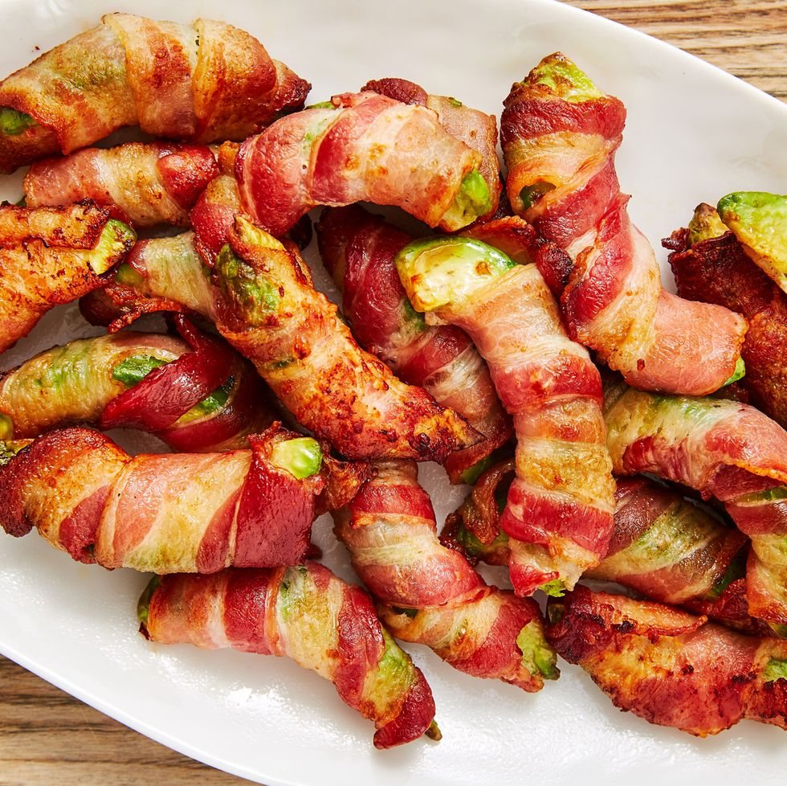

Bacon Avocado Fries

Description
Crispy bacon with creamy avocado might be the next Bonnie & Clyde. They're criminally delicious. Such combo might help a scrawny fellow gain some weight since the two are the YingYang of fatty acids, but don't consume too many. The delicious treat are called fries for a reason. Besides, a few are enough to make you feel as though you've chewed 5 gum.
Ingredients
- Bacon
- Avocado
- Ranch Dressing
Steps: For Air Fryer
- Slice each avocado into 8 equally-sized wedges. Wrap each wedge with a strip of bacon, cutting bacon if needed.
- Working in batches, arrange in air fryer basket in a single layer. Cook at 400° for 8 minutes until bacon is cooked through and crispy.
- Serve warm with ranch.